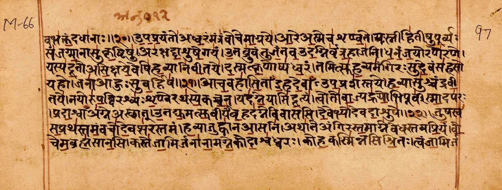
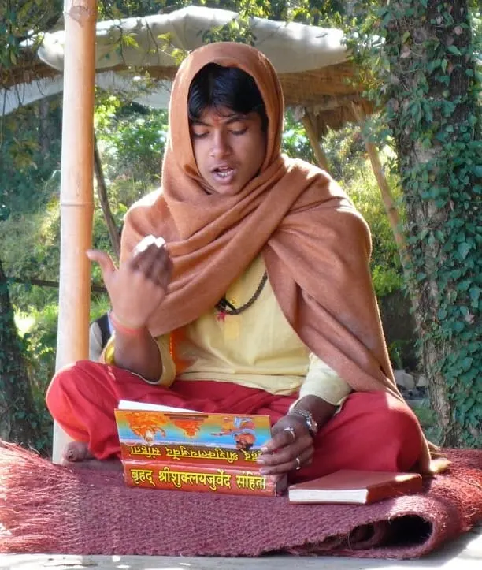
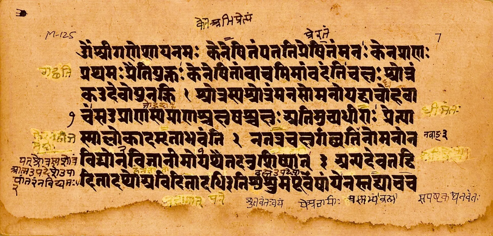

HomeVedic Knowledge
वेदThe Vedas: knowledge at the source of creation
The oldest living tradition of knowledge in the world, still chanted every day at Anāmay.

Eternal sounds, heard rather than written
The Vedas are the eternal, uncreated vibrations of the transcendental field of pure consciousness that lies at the source of creation.
They are the seed of all the Laws of Nature in the universe. Through self-referral interaction within themselves they give rise to the universe and continue to uphold it in all its diversity. The tradition calls them śruti, “that which is heard”: primordial vibrations cognized by the ancient seers, not ideas made by people.
Vedic families have recorded and preserved them since time immemorial as the hymns of the four Vedas.

The four Vedas
Ṛg Veda
The holistic “encyclopedia” of Natural Law. Its collection contains most of the hymns of the Sāma and Yajur Veda.
Sāma Veda
The Vedic hymns in a flowing, melodic form. The ashram is reviving its tradition in the Himalaya.
Yajur Veda
The hymns arranged for yagyas, the Vedic performances, for the benefit of the individual, the community and the world.
Atharva Veda
A distinct tradition, preserved today by very few families. The ashram hopes to open an Atharva Veda section.
One root, many branches
The four Vedas are expanded in the other parts of the Vedic literature. Several of them are lived daily at the ashram.
Brāhmaṇas & Āraṇyakas
Commentaries on and contemplations of the Vedic hymns.
Upaniṣads
The philosophy of the Self (Ātmā), the source of Vedānta.
Upavedas
Including Āyurveda, the science of health, and Sthāpatya Veda (Vāstu), the science of architecture.
Vedāṅgas
Jyotish (astrology), Śikṣā (pronunciation), Vyākaraṇa (grammar) and Kalpa (performance of yagyas).
Upāṅgas
The six systems of philosophy, including Yoga and Vedānta.
Smṛtis & Itihāsa-Purāṇas
The remembered tradition and the great epics and histories.
Why the chanting must not fall silent
UNESCO recognised the Tradition of Vedic Chanting as part of the Intangible Cultural Heritage of Humanity, proclaimed in 2003 and inscribed in 2008. Children learn complex recitation techniques, built on tonal accents and exact pronunciation, which keep every syllable unchanged over thousands of years. Only a handful of the many historical recitation branches survive today.
This is why the ashram trains young pandits. At its centre is the practice of Transcendental Meditation and the TM-Sidhi programme, which hold the essence of Yoga, Vedānta and all the Vedic sciences.
Source: UNESCO Intangible Cultural Heritage — Tradition of Vedic chanting

Kena Upanishad of the Samaveda, manuscript · Photo: Ms Sarah Welch, CC BY-SA 4.0 via Wikimedia CommonsOur students reciting the Veda
Short recordings from the ashram, including a section of the Yajur Veda.